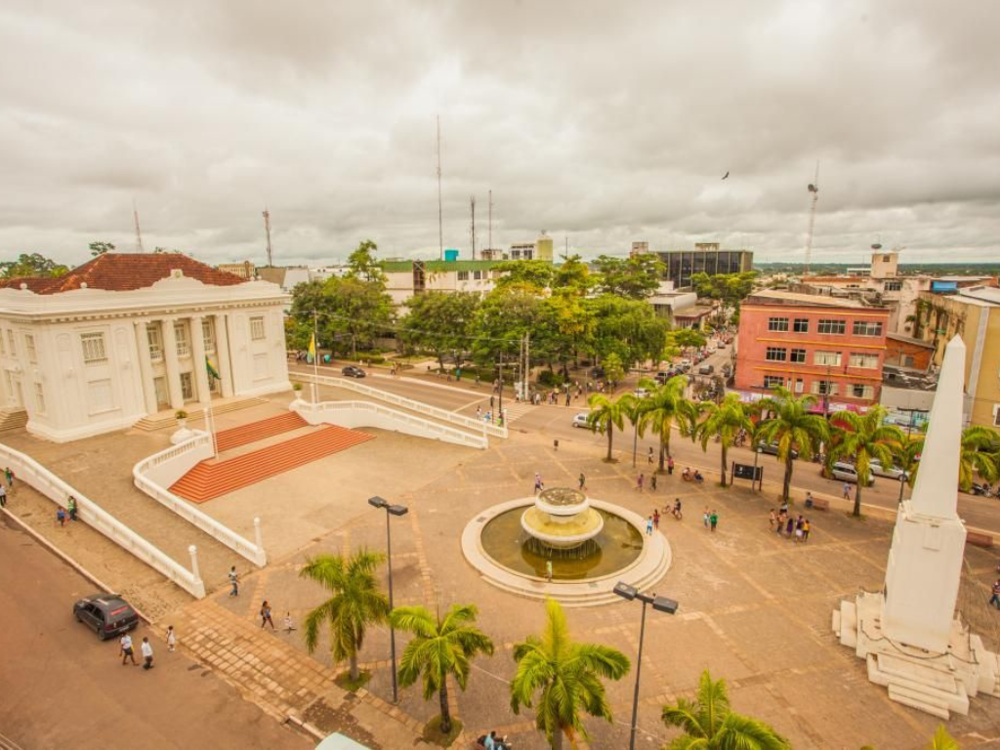

O Acre, localizado no extremo sudoeste da Região Norte do Brasil, identidade é um estado marcado por um forte amazônico, vasta biodiversidade e uma história única de incorporação ao território brasileiro, finalizada apenas em 1903 após o Tratado de Petrópolis . Com capital em Rio Branco , a região teve seu desenvolvimento impulsionado pelo ciclo da borracha no final do século XIX, atraindo migrantes, especialmente nordestinos, o que moldou sua cultura singular. Hoje, o estado se destaca pela preservação ambiental, com grande parte de seu território protegido pela floresta amazônica, além de basear sua economia no extrativismo sustentável, agropecuária e comércio, sendo também reconhecido pela rica diversidade cultural dos povos indígenas e seringueiros.
